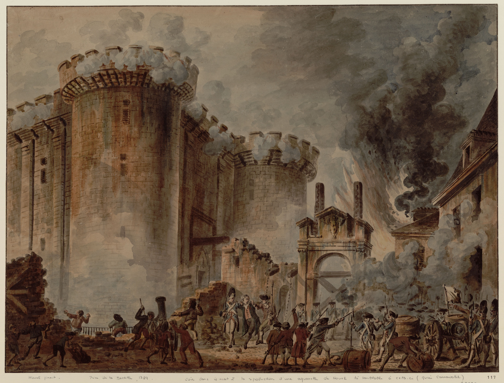
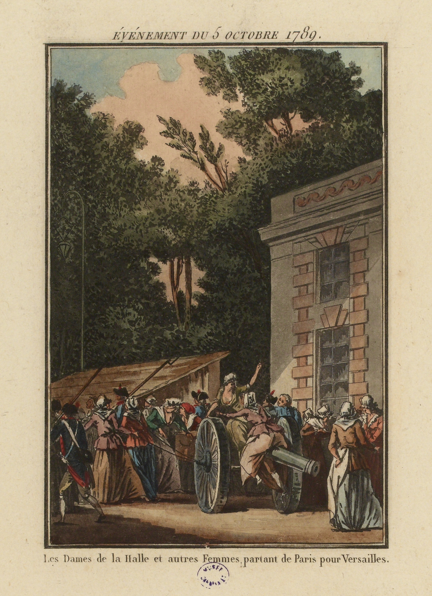

法國從 1789 年的「法國大革命」到 2026 年 10 月爆發的「零元購」暴亂
共 41 幕分鏡 · 預估成片總長度：10分27秒 (627.7s) · 自動生成於 20261019_France_Zero_Cost
🎞️ 各場景分鏡與語音審查
001_shot_1 · 大家好！我是白兔！當你想到法國巴
時長: 12.61s

002_shot_2 · 但在二零二六年十月十七日這一天
時長: 11.58s

003_shot_3 · 回到當時的大環境來看歐洲正面臨漫
時長: 14.98s

004_shot_4 · 當天有五十五萬名憤怒的抗議者湧上
時長: 13.58s

005_shot_5 · 但誰也沒想到這場浩大的請願在短短
時長: 15.18s

006_shot_6 · 那麼一個以啟蒙思想自豪的古老國度
時長: 14.38s

007_shot_7 · 要弄清楚這件事我們得把時間撥回到
時長: 14.78s

008_shot_8 · 到了一七八九年春夏之交巴黎平民面
時長: 13.58s

009_shot_9 · 課本上總是告訴我們攻佔巴士底監獄
🖼️ 畫中畫 PiP
時長: 19.65s

疊加參考圖 (PiP)：

010_shot_10 · 隨後這股街頭風暴演變成席捲全城的
🖼️ 畫中畫 PiP
時長: 15.78s

疊加參考圖 (PiP)：

011_shot_11 · 強行把國王路易十六一家從金碧輝煌
時長: 13.62s

012_shot_12 · 你看法國人自古以來就有一種直接走
時長: 16.94s

013_shot_13 · 時間快轉到二零一八年底席捲全法的
時長: 14.12s

014_shot_14 · 愛麗舍宮裡的高級官僚坐在冷氣房裡
時長: 14.97s

015_shot_15 · 通膨巨浪吞噬了普通人銀行帳戶裡原
時長: 15.98s

016_shot_16 · 於是各大短影音平台和加密通訊群組
時長: 14.78s

017_shot_17 · 但這場運動從一開始就沒有任何理性
時長: 19.07s

018_shot_18 · 十月十七日午後極左翼常用的黑塊戰
時長: 14.98s

019_shot_19 · 老佛爺百貨這座象徵法式精緻奢華的
時長: 14.58s

020_shot_20 · 愛馬仕路易威登迪奧和賽琳的鋼化展
時長: 10.33s

021_shot_21 · 幾分鐘前這群人還在街頭高喊著打倒
時長: 16.58s

022_shot_22 · 這種極度魔幻的打砸搶很快蔓延到了
時長: 15.18s

023_shot_23 · 法國商業與零售聯合會隨後發布了一
時長: 14.18s

024_shot_24 · 這場面真的非常諷刺兩百年前是為了
時長: 16.38s

025_shot_25 · 然而這場席捲法國的災難並沒有在名
時長: 15.78s

026_shot_26 · 全法大約有五十家家樂福門市遭到暴
時長: 14.98s

027_shot_27 · 嬰兒奶粉高檔肉品和成箱的罐頭被整
時長: 15.38s

028_shot_28 · 除了大型連鎖賣場平民街區的小菸草
時長: 10.37s

029_shot_29 · 隔天清晨許多靠著微薄養老金生活的
時長: 11.17s

030_shot_30 · 你看這些劫匪嘴上打著替窮人向高物
時長: 19.04s

031_shot_31 · 面對全法多處幾近失控的無政府狀態
時長: 21.39s

032_shot_32 · 法國總統馬克宏隨後在電視螢幕前發
時長: 16.38s

033_shot_33 · 可就在特警在火海中與暴徒搏鬥商店
時長: 18.74s

034_shot_34 · 在視野極佳的貴賓包廂裡這位國家元
時長: 16.78s

035_shot_35 · 無數網民紛紛湧入社交平台痛批這是
時長: 10.97s

036_shot_36 · 這種上位者與民間疾苦完全脫節的平
時長: 9.69s

037_shot_37 · 更令人擔憂的是這股藉著示威行打砸
時長: 23.19s

038_shot_38 · 我們回頭審視這段從一七八九年走到
時長: 19.97s

039_shot_39 · 街頭不再孕育推動社會進步的偉大思
時長: 9.77s

040_shot_40 · 只能說當街頭的怒火不再是為了追求
時長: 14.54s

041_shot_41 · 好了今天的事件就聊到這裡
時長: 21.78s